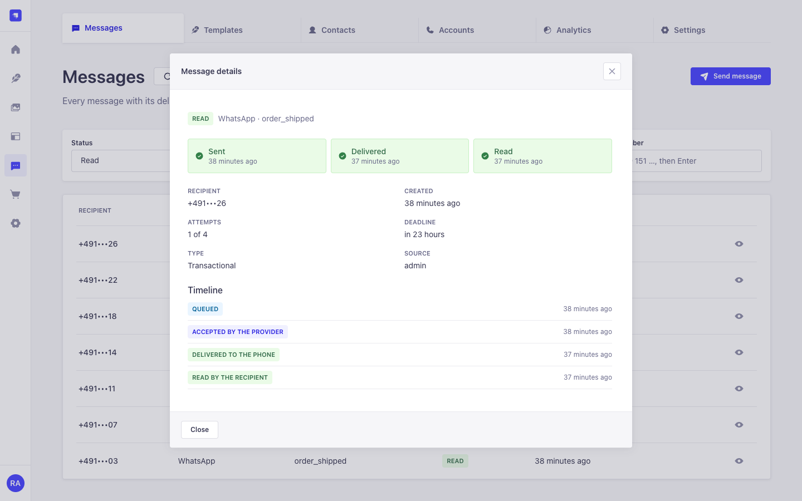
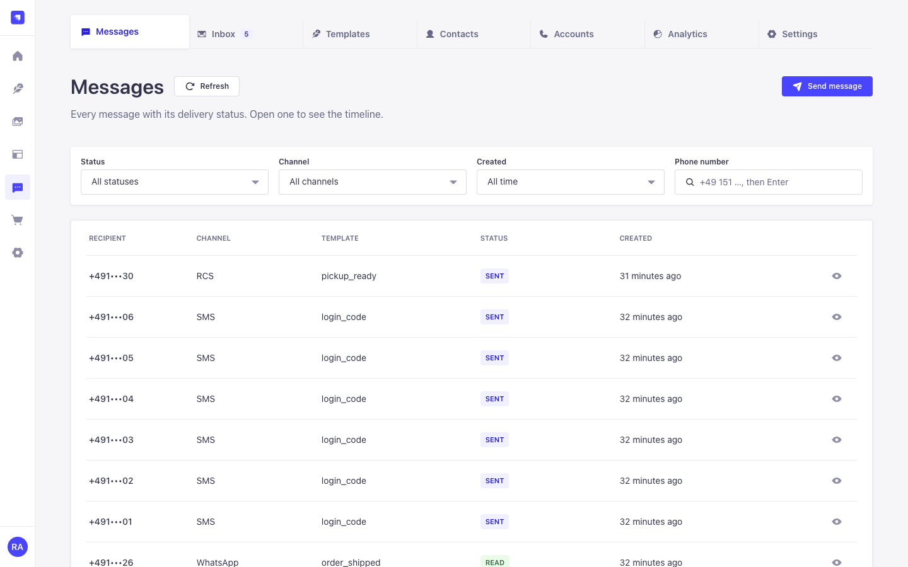
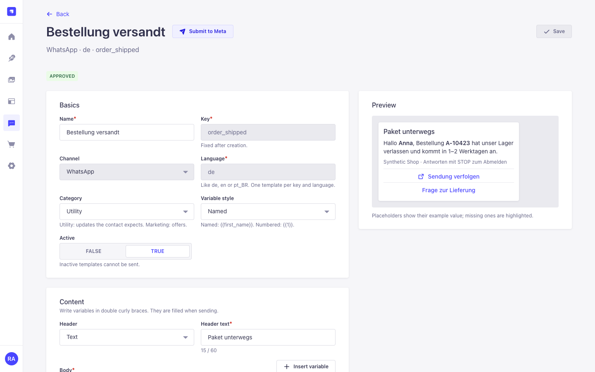
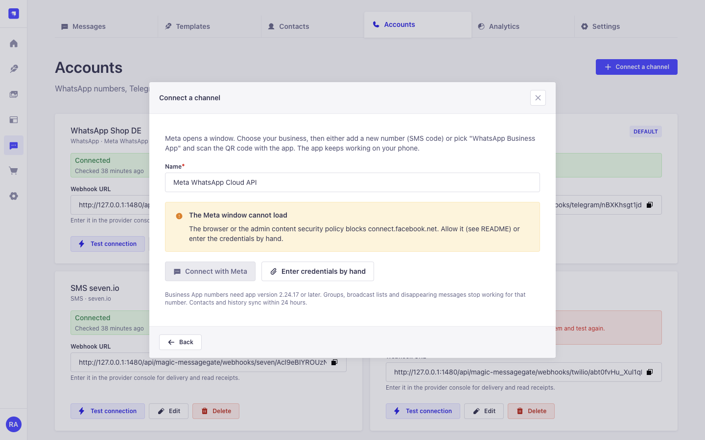
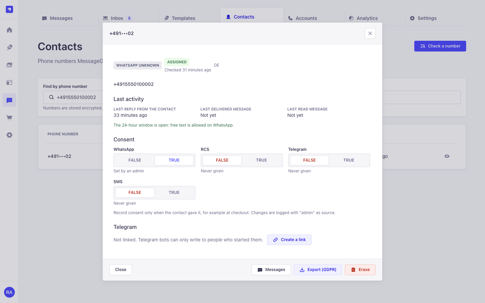
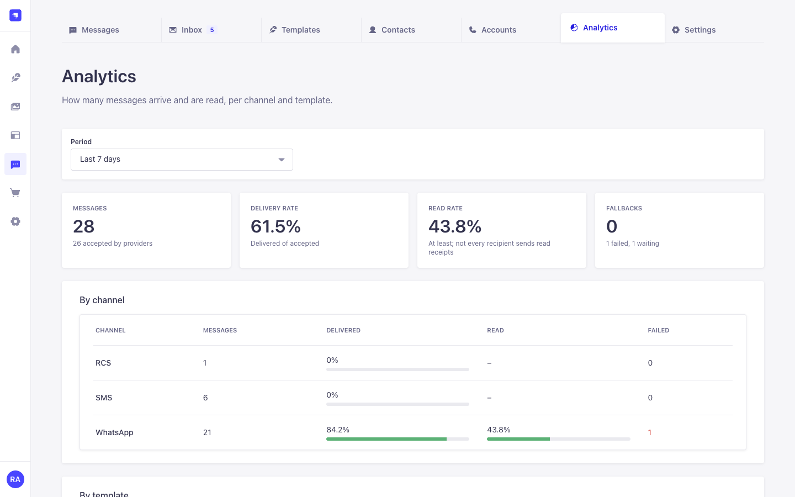
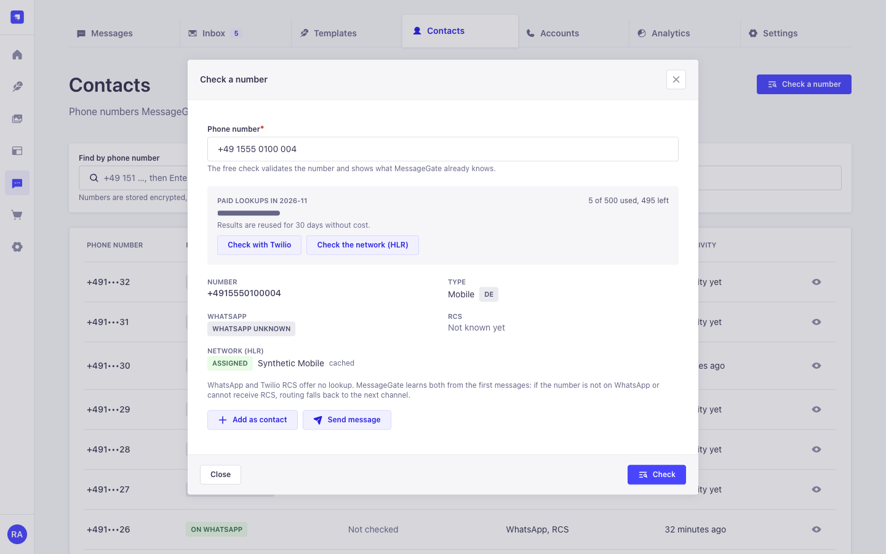

Three channels, one API
WhatsApp through Meta's Cloud API, Telegram through the Bot API, SMS through seven.io or Twilio. No vendor SDKs.
Strapi 5 plugin · MIT
Send a template with one call. MessageGate picks the channel, sends the message exactly once, tracks it to delivered and read, and falls back to SMS when WhatsApp can't reach the number. It uses the official provider APIs only.

WhatsApp through Meta's Cloud API, Telegram through the Bot API, SMS through seven.io or Twilio. No vendor SDKs.
Variables, a preview per channel and the SMS part count. WhatsApp templates are submitted to Meta from Strapi, and their approval status updates by itself.
A durable outbox in your database. Each message goes out once, also with several Strapi processes. The same idempotency key never sends twice.
Every message has a timeline, and failures come with a reason in plain language.
WhatsApp → SMS → e-mail through Magic Mail. Numbers that aren't on WhatsApp are remembered. Set the channel order per template, tag or country.
Consent per channel, STOP keywords, export and erasure per contact. Phone numbers are stored encrypted.
A free format check, plus an optional paid Twilio line-type lookup with a cache and a monthly budget.
Retries only when the provider provably didn't take the message. An unknown outcome becomes uncertain, and an admin decides.
People often ask for things the providers don't offer. Here is what is possible.
| Question | Telegram | SMS | MessageGate | |
|---|---|---|---|---|
| Does the number exist? | No check before sending; error 131026 on the first send means "not on WhatsApp" | Only for people who started your bot | Paid carrier lookups | Free format check, optional paid lookup, learns from the first send |
| Is the person online? | Not available | Not available | Not available | Shows the last activity instead |
| Has the person read it? | Yes, unless read receipts are off | No read receipts for bots | Delivery receipt only | Timeline per message, read rate per template (a lower bound) |
Built only from the Strapi Design System. Every screen works in light and dark mode and at phone width.






Install the package:
npm install strapi-plugin-magic-messagegateEnable it in config/plugins.js:
module.exports = ({ env }) => ({
'magic-messagegate': {
enabled: true,
config: {
encryptionKey: env('MESSAGEGATE_ENCRYPTION_KEY'), // 16+ characters, never change it later
publicUrl: env('PUBLIC_URL'), // used for webhook URLs
},
},
});Build and start Strapi, then open MessageGate in the admin menu.
Accounts → Connect a channel. SMS (seven.io or Twilio) or Telegram (a bot token from @BotFather) are the quickest first test.
Templates → Create template, then send it from Messages → Send message.
You need a Meta business portfolio, a Meta app with the WhatsApp product and a payment method. Meta charges per
delivered template message (pricing).
Connect a new number, or your existing WhatsApp Business App number by QR code (coexistence), through
Connect with Meta, or paste the credentials by hand. For the Meta window, allow
https://connect.facebook.net in script-src and https://www.facebook.com
in frame-src of Strapi's security middleware. The
README has the full setup.
const { id, status, channel, duplicate } = await strapi
.plugin('magic-messagegate')
.service('messages')
.send({
to: '+4915123456789',
template: 'order_shipped',
language: 'de',
variables: { first_name: 'Anna', order_id: 'A-10423' },
idempotencyKey: 'order-shipped-A-10423',
});curl -X POST https://cms.example.com/api/magic-messagegate/messages \
-H "Authorization: Bearer $STRAPI_API_TOKEN" \
-H "Content-Type: application/json" \
-d '{"data":{"to":"+4915123456789","template":"order_shipped","variables":{"first_name":"Anna","order_id":"A-10423"}}}'
The Content API accepts Strapi API tokens only. It answers 202 for a new message and
200 with duplicate: true for a repeated idempotency key. Other routes:
GET /messages/:id, POST /consent, POST /telegram-link,
POST /lookup.
strapi.eventHub.on('messagegate.message.failed', ({ messageId, channel, code }) => {
strapi.log.warn(`Message ${messageId} on ${channel} failed: ${code}`);
});The full contract, with every field, status, event and error code, is in AGENTS.md. For AI tools: llms.txt and llms-full.txt.
config/plugins.js holds the infrastructure options: encryption key, public URL, worker interval
and concurrency, retry delays, rate limits, provider timeouts and the Meta app for Embedded Signup. Business
rules live on the Settings page: consent, opt-out keywords, channel chain, routing rules,
e-mail fallback, lookup budget and retention. The
README lists both with defaults.
All state lives in the database, so Railway replicas or a pm2 cluster share it without sticky sessions. In the acceptance run, 8 processes on one PostgreSQL database sent 500 messages with 0 duplicates. When a deploy changes tables, start one replica first.
zod and libphonenumber-js.Report vulnerabilities privately through GitHub security advisories.
Versions follow semantic versioning and are published to
npm. Changes and migration notes
are in the changelog.
MessageGate replaces the unpublished magic-whatsapp plugin, which drove WhatsApp Web through an
unofficial library; see the
migration notes.